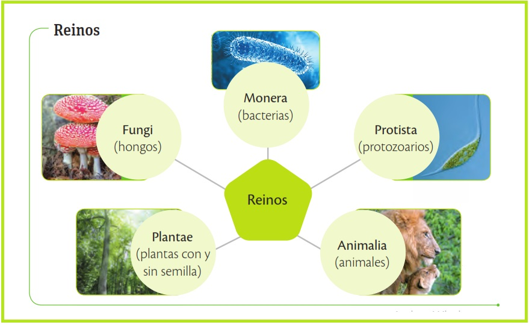
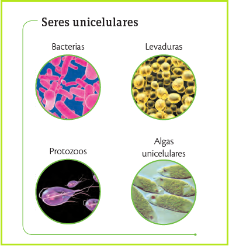
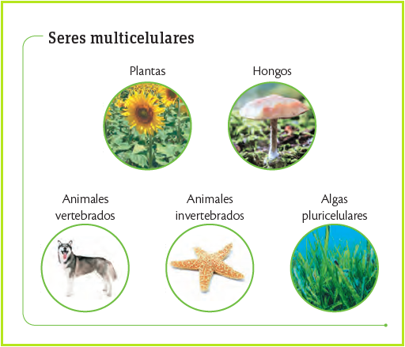
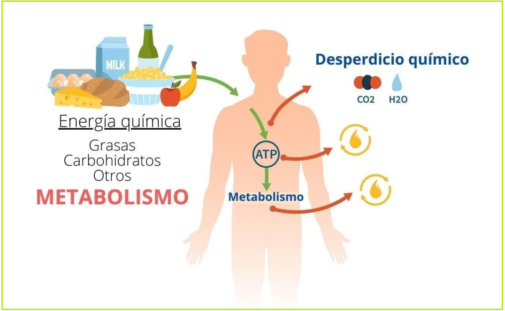
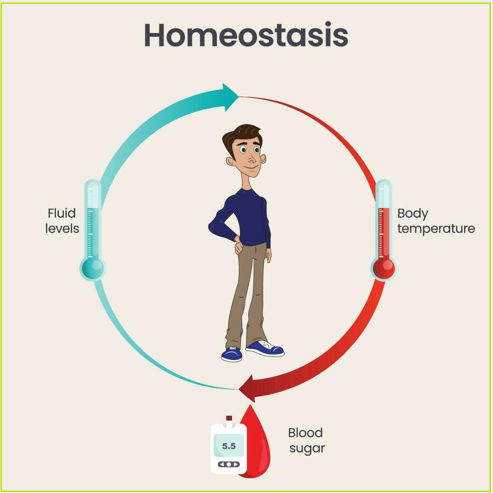
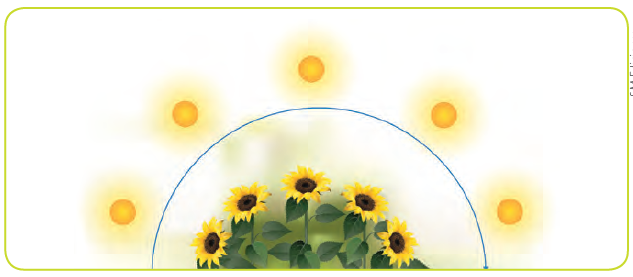
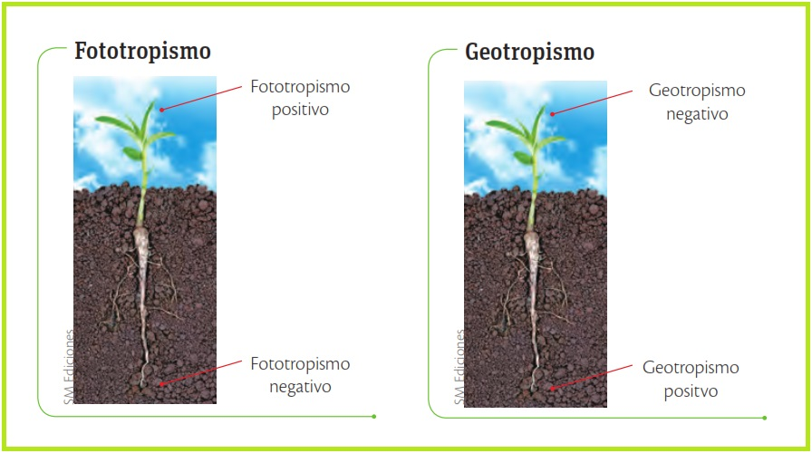
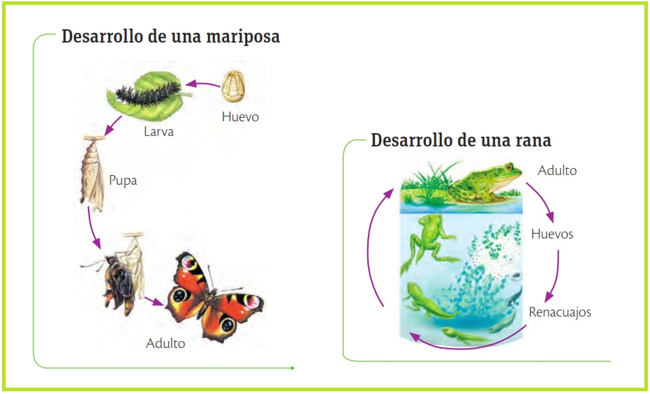

Los seres vivos se definen por ocho funciones vitales: organización estructural, metabolismo energético, homeostasis (equilibrio interno), e irritabilidad ante estímulos. También presentan movimiento, desarrollo gradual, reproducción para perpetuar la especie y adaptación evolutiva al entorno. El fallo en cualquiera de estos procesos rompe el equilibrio biológico, provocando enfermedad y, eventualmente, la muerte del individuo.
Los científicos clasifican la biodiversidad en cinco grandes reinos basados en sus similitudes biológicas: Animalia (seres pluricelulares heterótrofos), Plantae (organismos fotosintéticos), Fungi (hongos descomponedores), Protista (organismos simples diversos) y Monera (bacterias unicelulares).
Compartir características dentro de estos grupos facilita el estudio de la vida y su evolución. Esta organización jerárquica es fundamental para entender cómo interactúan y se relacionan todas las especies en el planeta.

La célula es la unidad fundamental de la vida, responsable de funciones vitales como la respiración, excreción y reproducción. Los organismos se dividen en:
Son los que están conformados por una sola célula autónoma.

Donde las células se especializan y organizan jerárquicamente en tejidos, órganos y sistemas.
Esta complejidad estructural permite que los seres vivos mantengan su origen y funcionalidad biológica de manera eficiente.

La nutrición es el proceso de obtención y descomposición de alimentos para liberar nutrientes esenciales que las células utilizan mediante el metabolismo. En organismos pluricelulares, este ciclo requiere la acción coordinada de los sistemas digestivo, circulatorio, respiratorio y excretor para procesar energía y eliminar desechos. Sin estas reacciones químicas y físicas constantes, el mantenimiento de la vida y el equilibrio corporal serían imposibles.

es el mecanismo que mantiene en equilibrio las condiciones internas (temperatura, agua, glucosa) para la supervivencia. Mientras los unicelulares intercambian sustancias directamente con el medio, los multicelulares utilizan sistemas complejos como el nervioso y hormonal para coordinar órganos como riñones y pulmones. Un ejemplo clave es la termorregulación: sudamos para enfriarnos o temblamos para generar calor y volver a los 36,5 °C ideales.

Los seres vivos captan cambios del entorno llamados estímulos y generan respuestas para sobrevivir. Los animales utilizan órganos sensoriales (ojos, antenas) para detectar depredadores o recursos, mientras que las plantas emplean receptores para el fototropismo (como el girasol buscando luz). Desde insectos detectando $CO_2$ hasta raíces buscando agua, esta capacidad de respuesta garantiza que el organismo interactúe eficazmente con su medio.

Es el desplazamiento de un organismo o sus partes, incluyendo el flujo de organelos en la célula. En plantas, se denomina tropismo: es positivo si se dirige al estímulo (como el tallo hacia la luz) y negativo si se aleja. Ejemplos clave son el fototropismo (luz) y el geotropismo (gravedad), fundamentales para que raíces y tallos crezcan en la dirección adecuada para la supervivencia.

El crecimiento es el aumento de tamaño mediante la adquisición de nutrientes: los unicelulares agrandan su célula y los multicelulares incrementan su número. Este proceso suele ir acompañado del desarrollo, que implica cambios estructurales y funcionales como la maduración sexual o la metamorfosis (ej. de oruga a mariposa). Mientras que algunos organismos crecen limitadamente, otros, como los árboles, lo hacen durante toda su vida.
